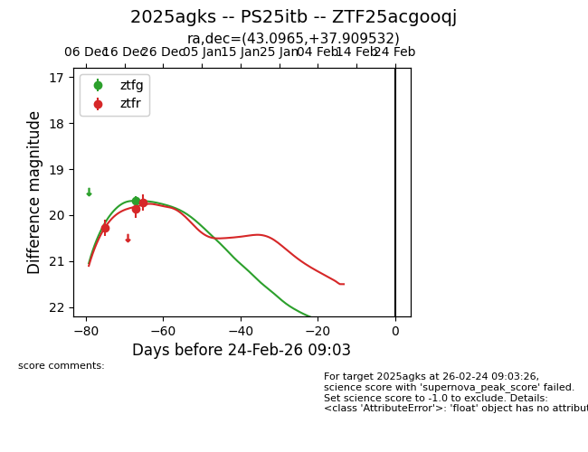
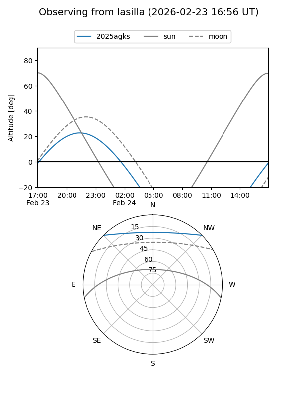
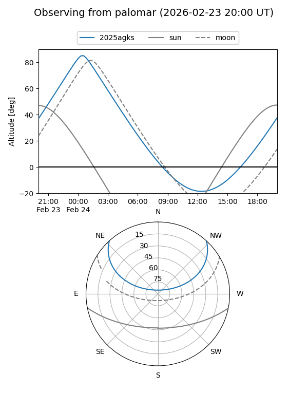
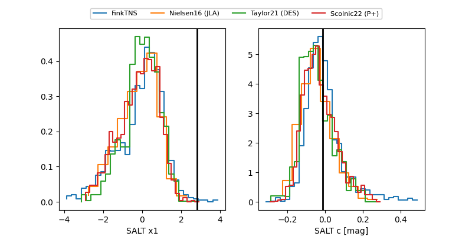

2025agks
Target 2025agks at 2026-01-26 13:26
Aliases and brokers:
FINK: link
Lasair: link
ALeRCE: link
TNS: link
YSE: link
alt names
ZTF25acgooqj (ztf,fink_ztf)
2025agks (tns,yse)
PS25itb (panstarrs)
Coordinates:
equatorial (ra, dec) = 43.0965,+37.90953
equatorial (HMS+DMS) = 02:52:23.15,+37:54:34.31
galactic (l, b) = (147.7885,-19.05576)
Flags:
Photometry:
last ztfg=19.69, ztfr=19.73
1 ztfg, 3 ztfr detections
Lightcurve

Visibility


Additional plots
